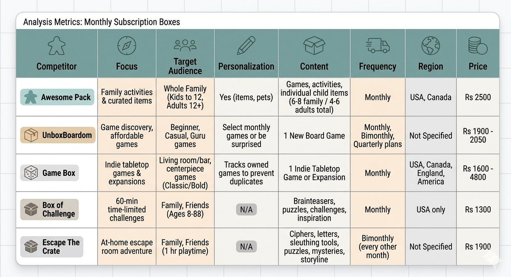
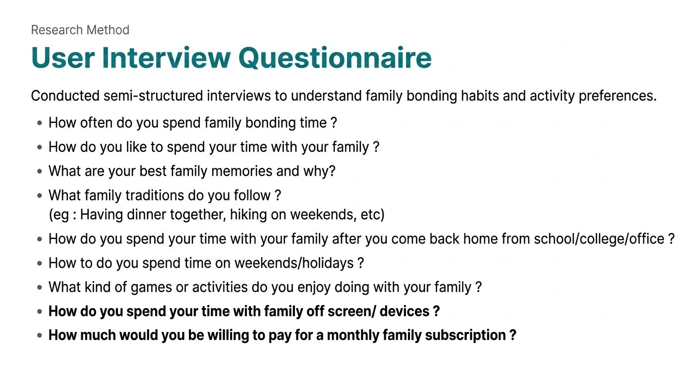
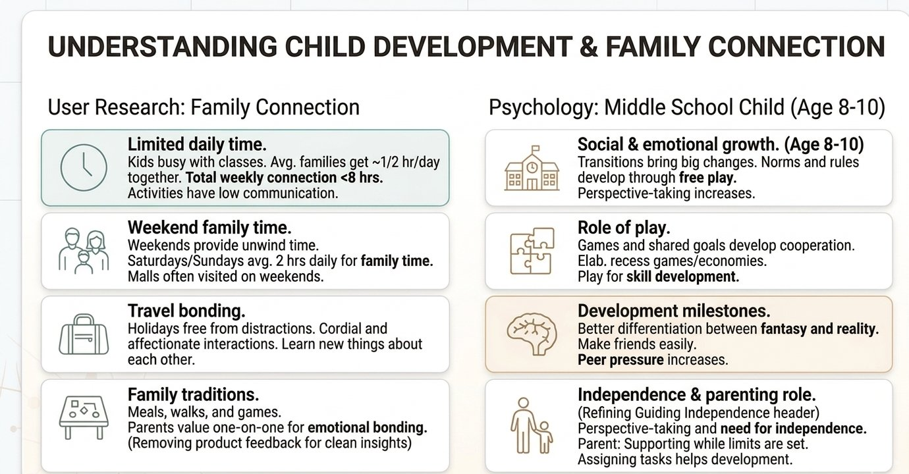
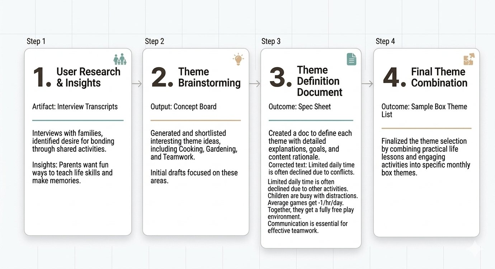
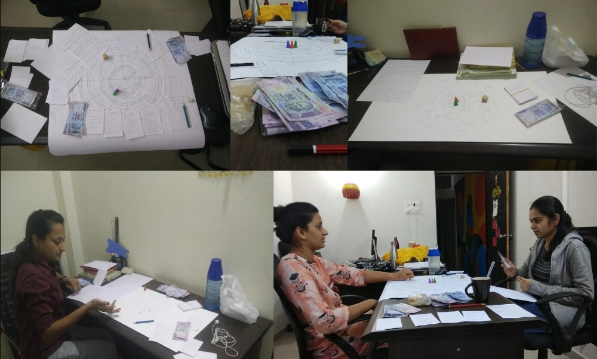
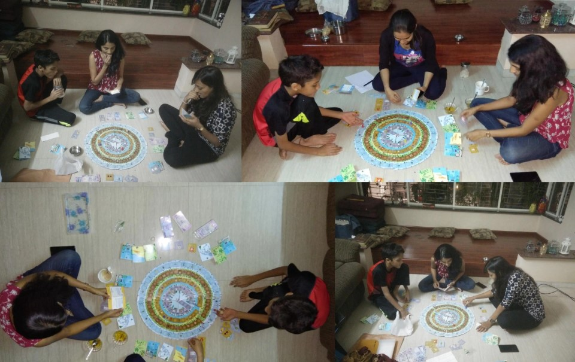
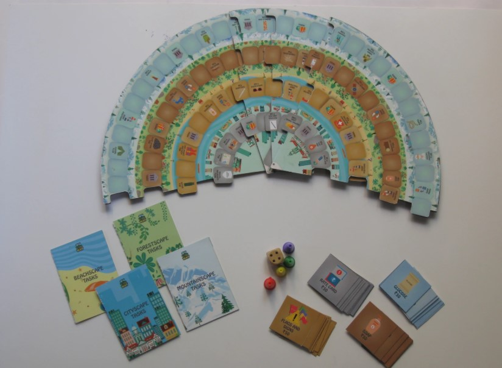

Starting with a brief,
guided by research.
Design Brief: Create a product or tool that can help make life easier or enhance everyday products using design.
Initial Direction: Subscription box for families.

Through market research, I identified a growing subscription box industry in India — 200% annual growth, with the highest number of subscription startups in the world. But competitive analysis of 5 major players revealed a critical gap.
What do families actually need from a monthly subscription box, and how can design address those needs?
Generative User Research
To understand family needs, I conducted multi-stakeholder research across four different perspectives — ensuring a comprehensive view of the problem space.
- Surveys & in-depth interviews
- Understanding time constraints and priorities
- What activities they do together
- Interviews & observational research
- How they spend time, what engages them
- Social dynamics post age 8
- Professional insights on learning gaps
- Life skills missing from curriculum
- What engages children effectively
- Expert perspectives on child development
- Age-appropriate skill building
- Family bonding dynamics


What the research revealed
Families hardly get to spend time together on a daily basis.
- Kids join multiple classes that keep them occupied throughout the day
- Less than 8 hours together in total each week
- Only 2 hours on weekends given over to family time
Most common activity: watching TV — which doesn't involve communication.
- Passive consumption dominates shared time
- Weekends are the only real opportunity to unwind together
- Most activities don't involve meaningful interaction
After age 8: Friends > Family in social importance.
- After the age of 8, kids give more time and importance to friends
- Makes family bonding even more critical during available time
- Engagement strategy must compete with peer activities
"We would appreciate it even more if you could help them teach practical life skills in a fun way." — Parent feedback
- Respondents liked the concept but wanted more depth
- Life skills gap identified: money management, planning, negotiation
- Families learn more about each other during trips and activities
Huge gap in teaching money management skills to kids in India and abroad.
- Average monthly allowance (ages 7–14): Rs 500–1000
- 45% of children ages 0–6 already receive pocket money
- Teaching financial literacy early builds self-worth and planning skills
Families learn a lot of new things about each other during trips and everyone becomes more cordial.
- Travel context naturally combines budgeting, planning and saving
- Fun and aspirational — ideal theme to engage kids
- Time-sensitive nature builds engagement and urgency
From brief to research-backed problem.
Research-Driven Constraints
- ✓Must facilitate communication — not passive consumption like TV
- ✓Must teach practical life skills (money management, planning, negotiation)
- ✓Must be engaging for kids age 8 and above
- ✓Must create shared memories and meaningful interaction
- ✓Must work within the limited 2-hour family window

Research-informed iteration
Shortlisted themes based on user research feedback — what life skills do parents want to teach? Listed existing games in the market and modified them according to the audience.
Made a document explaining which half of themes were practical life lessons and which half were fun activity-based. Realized both elements needed to be combined, not separated.
Decided to combine life skills AND activities — that's how the final themes were fixed. Each theme validated through playtesting with real families. Final themes: Trip Planning, Cooking, Gardening.


On My Way — the game
A money management board game that helps parents teach their kids life skills like negotiation, planning, and saving money.

Players travel through 4 different landscapes — Cityscape, Beach Scape, Forest Scape, and Mountain Scape. Each player receives a budget and must complete tasks by purchasing the tools needed for each landscape. Goal: complete tasks within budget and save the most money.
Insights Addressed by Design
Families have less than 2 hours together
Design Decision
2-hour gameplay window
Most activities are passive (TV)
Design Decision
Negotiation, trading, discussion required to play
Kids give more importance to peers after 8
Design Decision
Complex enough to engage older kids
Parents want practical skills through play
Design Decision
Teaches budgeting, planning and saving through gameplay
Game Components

Outcomes & Reflections
- Multi-stakeholder research
- Survey design
- Observational research
- Iterative prototyping
- Research synthesis
- Game mechanics understanding
- Interviews
- Surveys & questionnaires
- Competitive analysis
- Observational research
- Expert consultation
- Playtesting & validation
Project Deliverables
Research that turned a vague brief into an award-winning solution.
Starting with "design a subscription box", research revealed what families actually needed — quality time, communication, and practical life skills through play.
On My Way addresses real, research-validated pain points and won Best Research Based Report at Symbiosis Design Showcase 2018 for the rigour of its multi-stakeholder methodology.
Thank you for reading ✦